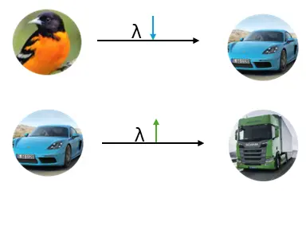
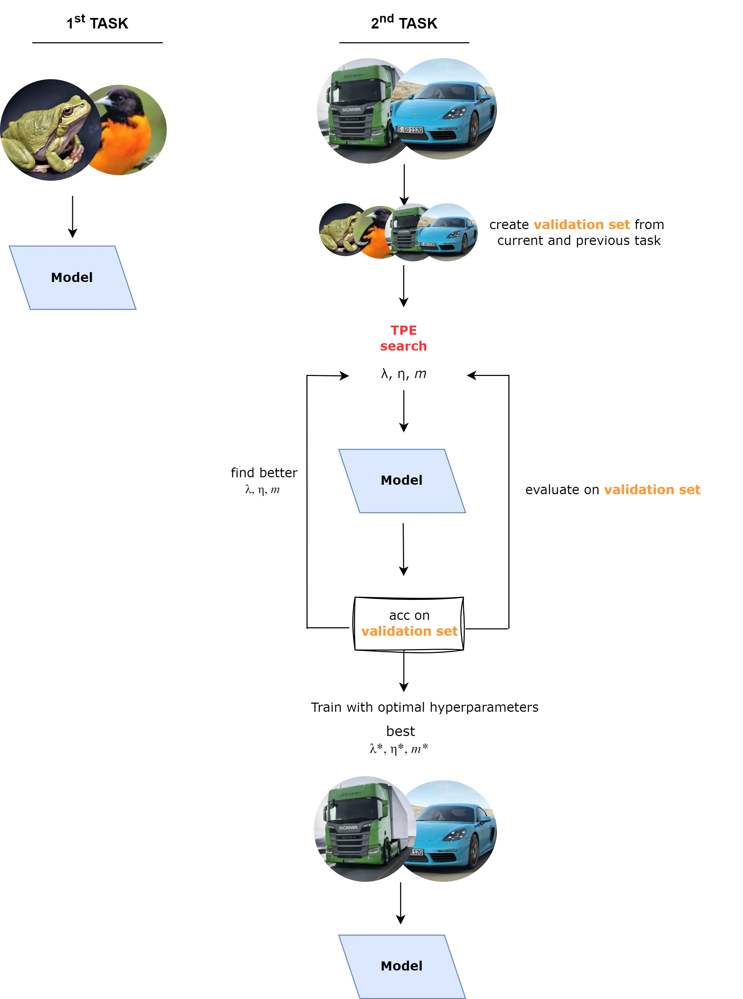
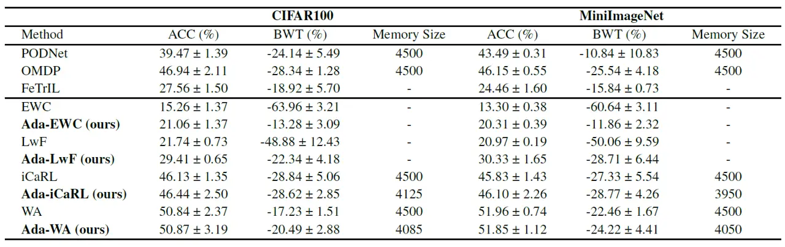

Adaptive Continual Learning
AdaCL: Adaptive Continual Learning
Elif Ceren Gok Yildirim, Murat Onur Yildirim, Mert Kilickaya, Joaquin Vanschoren
Understanding Continual Learning and the Catastrophic Forgetting
In the rapidly evolving field of machine learning, one challenge remains particularly persistent: the ability to continually learn new information without forgetting previously acquired knowledge. This forgetting problem is generally referred to in the field as “catastrophic forgetting”. Catastrophic forgetting occurs because, while models are learning new tasks, they lose the ability to recall information about previously learned tasks. This happens because the model’s parameters are updated to fit the new data, which can overwrite the representations of the old data.
Understanding Class-Incremental Learning
Class-Incremental Learning is one challenging scenario in CL which aims to update a model’s parameters and expand the classification layer to learn new categories while maintaining its accuracy on previously observed classes. Then during the test time, it assumes not to have access to task ids.
Solutions for solving Catastrophic Forgetting
Three major approaches have been explored to mitigate this issue:
- Regularization-based Methods: These techniques prevent abrupt shifts in the neural network weights by applying penalties that stabilize important parameters.
- Replay-based Methods: These involve storing a subset of training data and replaying it during the learning of new tasks to maintain previous knowledge.
- Architecture-based Methods: These methods adapt the network structure, either by expanding it or isolating parts of it to retain past information.
Motivation for AdaCL
All these CL methods bring additional hyperparameters to the learning process. For example: regularization strength, learning rate, memory size, etc. Current methods define these hyperparameters to a fixed value and assume that using the same hyperparameter setting will be sufficient for learning all different subsequent tasks. However, this approach does not reflect a realistic scenario. We can imagine 2 realistic scenarios:
##High Plasticity- Low Stability: Let’s say you have learned large animal categories and now you will have to learn vehicle categories. In this case, you would go for mid-to low regularization strength to learn the new categories. In addition to that, you might want to store many exemplars from the large animal category in the memory buffer because you will probably forget that since the vehicle category will change the model’s parameters a lot.

High Stability - Low Plasticity:
This time you have learned small vehicle categories and now you will have to learn large vehicle categories. In this case, you would think that these two subsequent tasks are intuitively similar so you don’t need to lower regularization strength because with high regularization, model weights will not change too much and current weights will probably be sufficient to learn the large vehicle category. Also, you might not want to store many exemplars from small vehicle categories because you did not change the model’s weights too much and you don’t want to use your budget unnecessarily.
Introducing AdaCL
AdaCL (Adaptive Continual Learning) introduces a novel approach where learning rate, regularization, and memory size are treated as dynamic, tunable variables. Instead of being fixed, these parameters adapt according to the learner’s current condition and the complexity of the task.
But how to find optimum hyperparameter values?
Search Algorithm = Tree Parzen Estimators
Validation set = some amount of data from the current task + some amount of data from previous tasks.
To achieve this, we use an AutoML tool which is Optuna and as a search algorithm, we apply Bayesian Optimization Tree Parzen Estimators. AdaCL searches and predicts the optimal values for these hyperparameters by evaluating the model’s performance on the validation set.

Experimental Setup
Our experiments utilized two well-known datasets: CIFAR100 and MiniImageNet. Each dataset contains images from 100 different categories, and we trained all models with 10 tasks, with each task containing 10 classes. Standard metrics for evaluation were used:
Accuracy (ACC) measures the final accuracy averaged over all tasks.
Backward Transfer (BWT) measures the average accuracy change of each task after learning new tasks.
We compared AdaCL with various baseline methods including EWC, LwF, iCaRL, and WA but the GOOD NEWS is: it is a plugged-in approach that means you can actually combine it with other methods that require better hyperparameter setting in CL.
Results
Key Findings:
- AdaCL boosts the performance of regularization-based methods.
- AdaCL yields better resource usage by leading to less memory size with the same performance.

Conclusion
AdaCL treats crucial hyperparameters as adaptable, addressing the challenges of CIL more effectively than traditional fixed-parameter approaches. We aim to underscore the importance of flexible, dynamic adaptation in the CL scenario. For those interested in further details, the full paper provides an in-depth analysis of the methods, experimental setup, and results. Read the full paper here.
This post was written by Elif Ceren Gok Yildirim and need not reflect the view of co-authors.